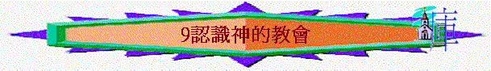

教師版
經文 ： 林前 1：1-2 、 太 16：18
引言：
很多未信主的人不肯接受救恩，不是他們覺得救恩不好，乃是怕返教會（出席教會的聚會），怕會花去時間，又怕不能任意的生活，如主日不可以與朋友去旅行等。今天，我們已信了主，不知我們對出席教會聚會的心態又如何？若我們對「教會」是甚麼也不認識，我們真會看重教會生活嗎？相信沒有一個人對一件自己不明白的事；會投入去作或積極的參與，他更不會從當中得著益處。A) 教會的定義
1)聖經中的定義：「教會」這個字在希臘文的意思是「被選召出來」，很明顯的指出「教 會」是一群人，但不是一群普通人，乃是為 神從世界中呼召出來，從撒但手下救出來，成為在基督裏的人，有 神的新生命。這包括古往今來一切信主耶穌的人，由於我們有此特別的身份，我們的生活應與未信的人有所不同。
例：有很多人以基督徒應作某些事，因他們心底裏自然地覺得基督徒應有比他們更高的標準（如道德標準）及有更好的品格。
例：一般人認為基督徒在主日應回禮拜堂。
2)「教會」從廣義可以說是在各地求告主名的信徒，教會不是指一座建築物，乃是一群有主生命的人所聚集而成。由於今天人的叫法；而有一個錯覺以為教會就是一座建築物，並將教會生活看為一種可有可無的社交生活。今天我們所講的教會是指地方教會而言，即在我們這個地方一同聚集的基督徒。
教會聚會的中心是指向主耶穌基督及以信仰的事為前題，而不是以信仰以外的事為重。
3)「教會」在狹義上是指在同一個地方聚集，一同敬拜 神的肢體，我們可以稱作地方教會。這是在外表的形式上，因著當中信徒的靈命及成長上而有不同的表達。教會是屬於主耶穌的，故教會聚會的中心是指向主耶穌，以信仰的內容為前題，一切以聖經上的教導為標準。教會是由主耶穌所創立，是建造在對主耶穌的認識上（認識祂就是救主及將要來的王），並接受祂為救主得以成為 神家裏的人。
B) 教會的象徵
教會在 神的眼中有何特別呢？我們可以從聖經中的象徵中看到 神對教會有何稱呼，就可以知道了。
1)基督的身體（弗 1：23 、 4：12）
a)這是指我們是與基督一同連結在一起，我們與主是成為一體，我們的一切是主知道的，祂明白我們的一切感受，如：喜樂、痛苦、難過......。
例：我們的手撞傷了，我們的頭是知道的，並且是有感受的。不可以說因是手受傷，那與頭無干。身體上一切的知覺頭是知道的。
例：使徒保羅在未信主之前是逼迫教會的，主在大馬色的路上向他顯淚，說他是攻擊主，因主是教會的頭，基督徒受逼迫即是攻擊主，主是知道的，並且主是眷顧祂的身體的，故我們要認識基督是教會的頭，教會是基督的身體，這真理告訴我們主必看顧我們。
b)這是指我們得著基督一切的特質和榮耀，因我們與主成為一體。主一切所有的成為我們的所有。
c)這是指我們服在主的管理之下，因身體是聽命於頭的指揮。
例：若身體不受頭的控制就表示出身體有毛病。
d)這是指我們都是基督身上的肢體，雖有不同功峞A但只是互相的配搭叫頭的命令得以完成，故不用自誇誰是最有用處（請自行查考林前十二章的比喻）。
2)基督的新婦（弗 5：22-33）
a)聖經用夫婦比喻基督與教會的關係，就如夫婦二人成為一體，基督與教會都是合而為一的。
b)新婦表示為新郎所喜愛的。
例：有那一個人會娶一個他所不喜歡的為妻呢？所娶的一定是他所喜愛的。
聖經形容基督愛教會到一個為教會捨命的地步；基督因愛我們，就為我們捨命，好叫我們可以信他而蒙恩得救，成為教會的一份子。
c)新婦表示她擁有新郎的一切－教會同樣是與基督一同承受萬有，享受基督所有的一切。
我們要感謝 神使我們可以與基督一同承受萬有，將來主再來時，我們必得見此恩典。
讓我們儆醒等候主的再來，勿為世上的事所纏累。
例：正如一個女子嫁給了一位王，就成為王后，王所有的就成為了她的所有。
3) 神的聖殿（
林前 3：16-17 、 彼前 2：5）a)聖殿是 神的居所，是特別分別出來專為 神的，不為其他的用途。
b)聖殿是敬拜 神及事奉 神的地方，為 神所看重的地方，故聖經上說，誰毀壞 神的殿， 神必毀壞誰，可見 神是如何的看重聖殿，故我們可以放心， 神必定看顧我們，因祂以我們為祂的殿。
c)屬 神的人聚在一起應對 神有敬拜，因這才與 神的殿相稱。（關於教會生活，遲一點才再談論。）
4) 神的家（
提前 3：15）a)家是一個得溫暖的地方－人最愛的是回家，因在家中可以自由自在的生活。人若說不愛家亦只是表示他對家有寄望（是未實淚的），不過在淚實中他的家不能叫他羡墦。
b)家是叫人得到被愛與付出愛的地方。
例：父母想得著兒女的愛戴，兒女想得著父母的愛護，丈夫或妻子想得著配偶的愛,亦同樣地想去愛家中其他成員。
神不以萬有為滿足，要以我們蒙恩的人為祂最大的滿足，這是 神對我們一個極大的提升。若我們仔細的思想自己算甚麼時，我們就知道 神對我們是何等的看重。
C) 教會在地上的目的
（這會在「教會生活」一課再詳細談論）1)見證 神（彼前 2：9-10）
聖經以我們為一群被 神從世界中呼召出來的人，目的是要在世人當中見證 神。
a)從生活中顯出一個與世界分別的生活。用我們較容易明白的話來說，即不與世人（或是一些軟弱的肢體）同流合污，不作不合聖經真理的事。
b)從彼此相愛中顯出我們有 神的愛。
c)從傳福音中去見證 神的愛及見證基督的復活。
2)顯出 神的恩典
神喜悅我們將祂的恩典帶給未信的人及從我們身上見證我們是屬 神的人，是有 神特別的看顧。
3)引領未信的人歸向 神
學生版
經文 ： 林前 1：1-2 、 太 16：18
A) 教會的定義
1)希臘文中的意思是指「被選召出來」，教會乃是一群為 神從世界中呼召出來的人，故屬 神的人在生活上應與世界的人有分別。
2)廣義是指古往今來在各地求告主名的信徒，為一群有主生命的人所聚集而成，故不要誤會教會是指一座建築物。
3)狹義是指在同一個地方聚集，一同敬拜神的人，我們可以稱作「地方教會」。這是在外表的形式上因應信徒的靈命及成長上的不同，而有不同的表達方式。教會是屬於主耶穌的，故教會的聚會中心必須是指向主耶穌，以信仰的內容為前題，一切以聖經上的教導
為標準。
B) 教會的象徵
1)基督的身體 （弗 1：23 及 4：12）
我們與基督是結連在一起，基督明白我們一切的感受，而我們又在基督的管理之下。
2)基督的新婦 （弗 5：22-33）
表示出與基督之間的親密及得著基督的愛，並享有基督的一切。丈夫對妻子要求貞潔及順服，基督對我們的要求也是一樣。
3) 神的聖殿 （林前 3：16-17）
聖殿是專為 神用，以敬拜及事奉 神為最重要，不可以作俗用。我們一同聚集就應對神有敬拜及服事。
4) 神的家 （提前 3：15）
家表示 神要在當中得著愛及滿足。 神本是全豐全足的，但 神卻以我們為祂的滿足，這是 神對我們的抬舉及看重。
C) 教會的目的
1)見證 神──用生活去見證 神的真實，如過一個分別為聖的生活、彼此相愛的生活及實踐傳福音使命的生活。
2)顯出 神的恩典──讓 神藉我們去將祂的恩典帶給別人。
3)引領未信的人歸向 神。